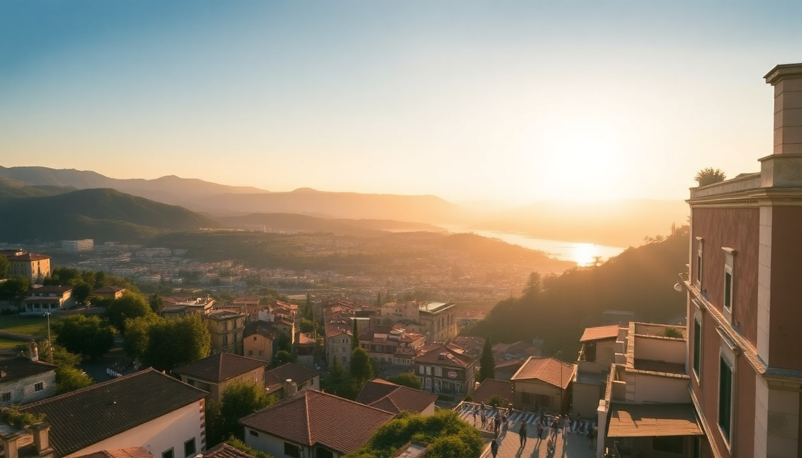

7 Days in Italy: Rome, Florence & the Amalfi Coast

We landed in Rome with a single carry-on each and a loose plan: hit three places in seven days without burning out. I’d read the frantic itineraries online—museum marathons, zero downtime. That’s not this trip. This is the version where you see the Colosseum, eat pasta in Florence, and dip your toes in the Tyrrhenian Sea without needing a vacation afterward. Here’s exactly how we did it, including the train times, the hotel that saved us, and the tourist trap we walked straight past.
Is seven days enough for Rome, Florence, and the Amalfi Coast?
Yes, but only if you move with purpose. Seven days means three nights in Rome, two in Florence, and two on the coast. You lose half a day to travel between each city, so plan for that. We used high-speed Trenitalia Frecciarossa trains—Rome to Florence is 1.5 hours, Florence to Naples is 2.5 hours, then a ferry from Naples to Positano. That last leg adds another hour, but the view from the hydrofoil makes up for it.
If I had to cut one, I’d drop the Amalfi Coast for a longer stay in Rome and Florence. The coast is beautiful but logistically annoying. Keep it if you want beach time and limoncello.
What’s the best way to see Rome in three days?
Start at Termini Station—it’s gritty but central. We stayed at Hotel Artemide, a four-star on Via Nazionale. The rooftop breakfast bar alone justifies the price. From there, everything is walkable.
Day one: hit the Colosseum and Roman Forum early (book skip-the-line tickets, or you’ll queue in the sun for an hour). Afternoon at Trastevere for lunch at Da Enzo al 29—get the cacio e pepe. Evening walk to Piazza Navona.
Day two: Vatican City in the morning. St. Peter’s Basilica is free, but the Sistine Chapel requires a ticket. Go early. The line wraps around the piazza by 10 a.m. Afternoon at Pantheon and Trevi Fountain (packed at all hours, but worth a quick visit at 7 a.m.).
Day three: Borghese Gallery (book two weeks ahead) or Appian Way if you want ruins without crowds. We did Borghese—the Bernini sculptures are insane.
- Colosseum – book online, avoid the gladiator-costume scammers outside
- Da Enzo al 29 – cash only, no reservations, worth the wait
- Hotel Artemide – Via Nazionale, quiet rooms, excellent breakfast
- Trevi Fountain – go at dawn or skip it
How do you fit Florence into two days?
Take the Frecciarossa from Roma Termini to Firenze Santa Maria Novella. Drop bags at Hotel Davanzati, a family-run spot two blocks from the Duomo. Free welcome drink and a solid breakfast spread.
Day one: Uffizi Gallery in the morning. Book the earliest slot—crowds thicken by 10. See Botticelli’s Birth of Venus, then walk to Ponte Vecchio for the jewelry shops. Lunch at Mercato Centrale—upstairs food court with fresh pasta and truffle oil. Afternoon at Duomo (climb the dome for the view, but skip the museum). Evening gelato at Gelateria dei Neri.
Day two: Accademia Gallery for Michelangelo’s David—it’s a 15-minute visit, tops. Then walk to Piazzale Michelangelo for the panoramic shot of the city. Lunch at Trattoria Mario (cash only, no reservations, legendary boar ragù). Train to Naples by 4 p.m.
- Hotel Davanzati – Via Porta Rossa, excellent service
- Uffizi Gallery – book weeks ahead
- Mercato Centrale – upstairs is less touristy than the ground floor
- Trattoria Mario – closes at 3 p.m., go early
Is the Amalfi Coast worth the travel hassle?
Honestly? It’s beautiful but overhyped in summer. We took the train from Florence to Napoli Centrale, then a Caremar ferry from Naples to Positano. The ferry ride is stunning—cliffs, pastel houses, turquoise water. But Positano itself is a vertical maze of stairs and souvenir shops. We spent two nights at Hotel Palazzo Murat, a converted monastery in the center. Quiet courtyard, decent rooms, close to the beach.
Day one: arrive, drop bags, walk to Spiaggia Grande for a swim. Dinner at Da Vincenzo—grilled octopus and lemon pasta. Book ahead.
Day two: ferry to Capri for a half-day. The Blue Grotto is a rip-off (€14 for a 3-minute rowboat ride), but the chairlift up to Monte Solaro is worth it. Back to Positano for sunset drinks at Franco’s Bar.
If I returned, I’d stay in Sorrento instead—flatter, cheaper, easier bus connections. Positano is photogenic but exhausting.
- Hotel Palazzo Murat – Via dei Mulini, central but quiet
- Da Vincenzo – Via Giovanni Pascoli, book two days ahead
- Franco’s Bar – expensive drinks, best sunset view in town
- Caremar ferry – buy tickets at the port, not online
Where should you eat between cities?
Train stations in Italy have surprisingly good food. At Roma Termini, skip the McDonald’s and go to Pompi for tiramisu. At Firenze Santa Maria Novella, grab a schiacciata sandwich from All’Antico Vinaio (the line moves fast). In Napoli Centrale, the Pizzeria di Matteo inside the station does a decent margherita for €5.
For sit-down meals, we planned one nice dinner per city. In Rome, Armando al Pantheon (book a month ahead). In Florence, Osteria Francescana is the famous one, but we preferred Il Latini for the wild boar and family-style seating. On the coast, La Sponda in Positano is romantic but pricey—skip it if you’re on a budget.
FAQ
How much cash should I bring for Italy? Small restaurants and taxis in Positano are cash-only. We withdrew €200 at a Bancomat in Rome and it lasted four days. Most places in Florence and Rome accept cards, but always carry €50 in small bills for market stalls and tips.
Is the ItaliaRail pass worth it for a 7-day trip? No. We bought individual Trenitalia Frecciarossa tickets online and paid €45 for Rome–Florence and €55 for Florence–Naples. A rail pass would have cost more. Book two weeks early for the best fares.
What should I pack for a trip covering cities and coast? One pair of comfortable walking shoes (I used Allbirds) and one pair of sandals. A light jacket for Vatican City’s air conditioning and evening ferry rides. Leave the heels at home—Positano’s stairs will destroy them.
Conclusion
- Three nights in Rome, two in Florence, two on the Amalfi Coast is doable but tight
- Book high-speed trains and major museum tickets in advance
- Eat at cash-only trattorias, skip the Blue Grotto, and stay in Sorrento instead of Positano if you want easier logistics
- Carry cash for smaller towns and market food
- The trip works best May–June or September–October; July is crowded and hot